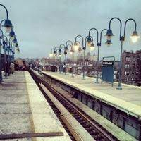

 From my first sunrise to my first kiss to my first breakup, this train station has seen everything. It saw my blood-red teary eyes at 4 a.m, the first flutter of my heart when the boy of my dreams dressed in an Adidas hoodie and a pair of worn-out converses kissed me, the first heartbreak that seemed like the end of the world when that same boy broke my heart.
Even after the train leaves, the pulsing sound of the train still pounds in the air. Even when the night falls, and the wave of faces slows down to almost nothing, sound is still there. Mist swirls across the empty track, and the tracks gets hidden underneath a wispy blanket. For the ones that are looking for an escape, the steady beam of the platform lights and the stale air is more than enough.